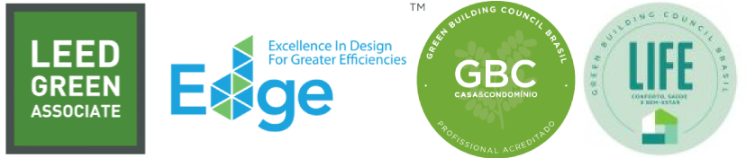

Diagnóstico e viabilidade
Analisamos características, objetivos e estágio de desenvolvimento da edificação para identificar as estratégias mais adequadas e, quando aplicável, qual certificação faz sentido para o projeto.
Sustentabilidade
LEED, EDGE, GBC Casa & Condomínio e GBC Life.
Referência municipal
Consulte o manual oficial de São José dos Campos com estratégias para edificações mais sustentáveis.
Analisamos características, objetivos e estágio de desenvolvimento da edificação para identificar as estratégias mais adequadas e, quando aplicável, qual certificação faz sentido para o projeto.
A partir da análise inicial, definimos estratégias relacionadas a energia, água, materiais, conforto e qualidade ambiental, considerando o impacto e a viabilidade de cada solução.
Orientamos o atendimento aos requisitos de sistemas como LEED, EDGE, GBC Casa & Condomínio e GBC Life, acompanhando documentação, análises e comprovações necessárias.
Acompanhamos todo o processo de análise junto ao órgão certificador, em fase de projeto e obra.
Certificações
As certificações ambientais analisam diferentes aspectos de uma edificação. Dependendo do sistema adotado, podem ser considerados critérios relacionados ao terreno, água, energia, materiais, resíduos, conforto, qualidade ambiental e bem-estar dos ocupantes.
Esses parâmetros ajudam a transformar objetivos de sustentabilidade em metas que podem ser acompanhadas e comprovadas durante o desenvolvimento do projeto.
Mas a certificação não precisa ser o único objetivo. Mesmo sem buscar uma certificação, a consultoria pode ajudar construtores e incorporadores a tomar decisões mais eficientes, reduzir retrabalhos e custos desnecessários, melhorar o desempenho da edificação e agregar valor ao empreendimento por meio de soluções mais bem fundamentadas desde o projeto.
Experiência técnica
A atuação em sustentabilidade exige conhecimento dos critérios de cada sistema e integração constante entre arquitetura, projetos complementares, obra e documentação.
Nossa experiência reúne referências técnicas como LEED Green Associate e EDGE Expert, além da atuação em processos relacionados ao GBC Casa & Condomínio e GBC Life.
Isso nos permite orientar cada projeto desde as primeiras análises até as etapas necessárias para comprovação e certificação.
LEED EDGE GBC Casa & Condomínio GBC Life
